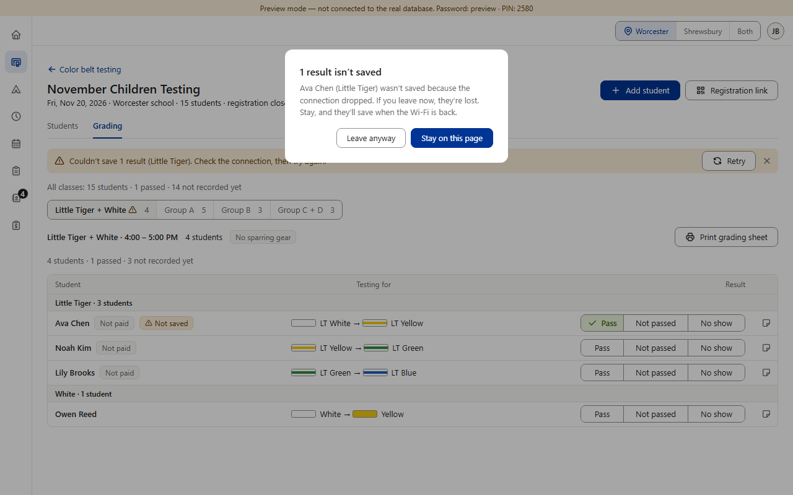
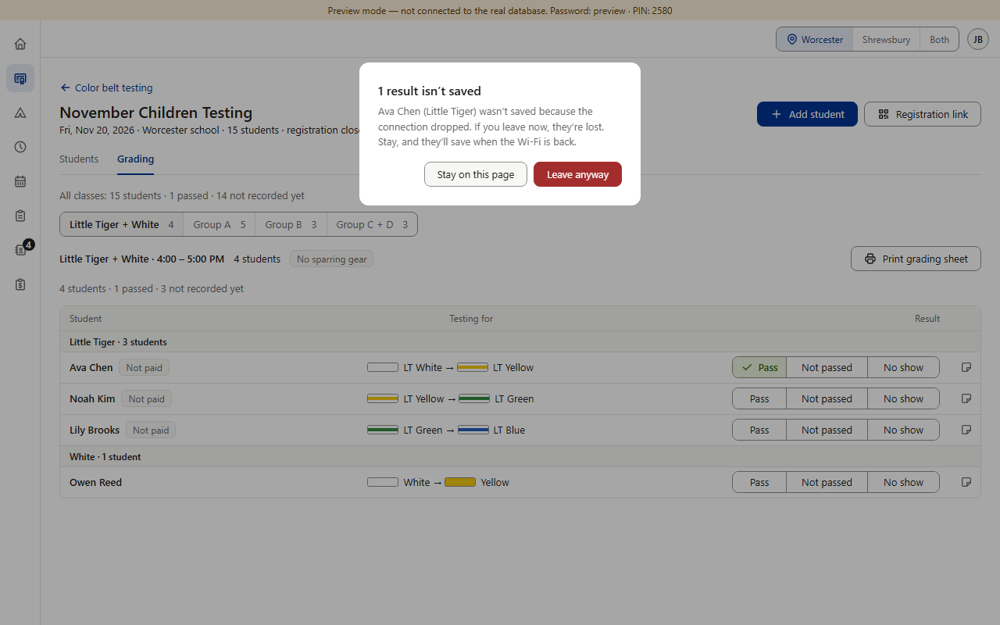

Today


Proposed (option B) · the same order everywhere

The rule in B: the button that changes nothing on the left; the action on the right — red when it loses something for good, blue otherwise; the first focus on the button that changes nothing whenever the action loses something, otherwise on the action (kiosk, “Came?”, as today). Picture 3 is drawn over the real box; nothing in the app was changed.